dag4blend Composite Editor
How to Enable
The Composite Editor is currently under development and is considered an experimental feature. As such, it is hidden by default. To enable its visibility, you need to check the appropriate box in the add-on settings.
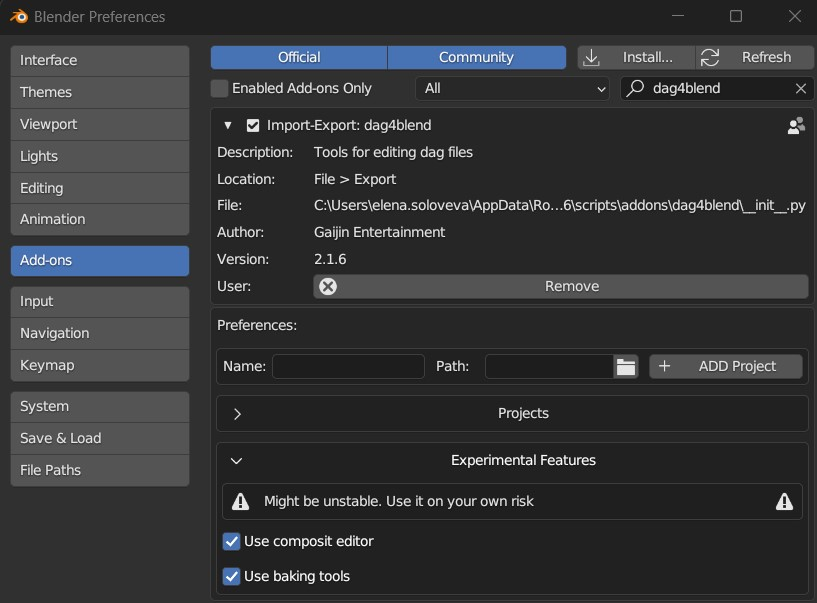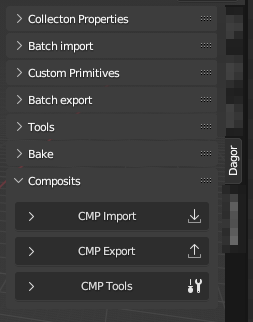
The Composite Editor can be found in the N-panel under the Dagor tab. The panel itself is divided into three main sections: CMP Import, CMP Export, and CMP Tools.
CMP Import
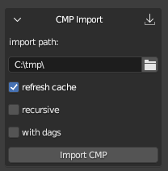import path: This is the full path to the
name.composit.blkfile. However, if the correct project is selected, you can simply specifyname.composit.blkor even justname– the add-on will locate and import it.refresh cache: To import subcomposites and geometry, the add-on needs to know where to find them. When this checkbox is active, the importer will scan all files in the active project directory once and record where everything is located. This list is then used during the import process, which significantly speeds up the operation compared to the previous version, where the directory might be searched multiple times across several levels of nesting. If you’re importing composites from the same project, you can uncheck this box to save a few seconds, but only if you’re certain the paths are up-to-date. A separate cache is maintained for each project.
recursive: This option imports not only the specified composite but also its subcomposites, which are nodes, and their subcomposites. The algorithm should be self-explanatory.
with dags: Imports
*.lod00.dagrendinsts and*.dagprefabs for all composites. If recursive is disabled, it only imports geometry directly within the composite being imported; otherwise, it also imports the necessary assets for the subcomposites.with lods: Available only when the previous checkbox is active. This option allows you to import not just
lod00but all other LODs (Level of Detail) as well. Keep in mind that this significantly slows down the import process and increases the scene’s complexity – useful only when you need to adjust a mesh in a small composite, rather than the position of nodes. For example, if you need to reposition a couple of apples so they don’t stick out of a box in a composite, and the apple pile is a single mesh, you still need to update all LODs, not just the first one.
If a collection named after the composite already exists, it will be cleared
during import, and the import will occur within that collection. If the
collection isn’t found, a new one will be created. All nodes are placed in a
collection named NODES; again, if a collection with this name exists, it will
be used.
If a .dag (rendinst or prefab) collection existed before the composite import,
the asset will not be imported.
The node type and its name are explicitly set in the collection’s properties.
For rendinsts, this isn’t critical since the name is stored in *.lods rather
than the nested geometry collections. However, for prefabs, this is important to
remember – Override Name will select the overridden collection name.
Note
Don’t forget to check the log.
New Blend File Structure
The Composite Editor also introduces a new file structure for .blend files.
Instead of having everything in a single scene, the new approach suggests using
multiple scenes, each organized by content type.
Scenes in Blender can be thought of as “.blend files within a .blend
file”. They are independent of each other, meaning that settings like checkbox
states, export paths, and other parameters are unique to each scene.
COMPOSITS: This scene is where all composites are imported.
GAMEOBJ: Collections for game objects are created here. These objects are not automatically readable, so placeholders for previews (and some tools, discussed later) must be manually added.
GEOMETRY: This is where all
.dagfiles are imported, including through dag-imports if the scene exists.Scene: The default scene that exists in a new
.blendfile. Any scenes you create will also appear in this list; tools do not delete user-created resources.TECH_STUFF: Ideally, you should never need to use this scene. It contains temporary collections of random nodes, and in the future, other resources required for the add-on’s internal tasks.
These scenes are not linked to each other. To transfer resources between them, the add-on adds a collection called TRANSFER_COLLECTION to each scene. This collection isn’t a copy but the same entity across all scenes. For example, you can enter the GEOMETRY scene, create nodes from the necessary rendinsts, place them in this collection, and then switch to the COMPOSITS scene to start assembling your composite using those nodes.
If you want to set up this scene structure without importing a composite, or if you’ve accidentally deleted the TRANSFER_COLLECTION, don’t worry. The CMP Tools▸Scenes section includes a button for creating or updating the scene structure, along with a duplicate scene switcher. This dropdown differs from the standard one in that it prevents accidental deletion or duplication of scenes.
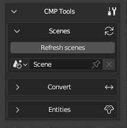Creating Nodes
Let’s start by exploring the different methods for creating nodes. There are several approaches:
Adding an Empty Object
You can add an Empty object to the scene, enable instancing in the Entities panel, and select the desired object’s collection from the dropdown menu. If instancing is disabled, or enabled but the collection is not specified, the node will be exported as empty.
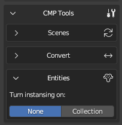
Dragging a Collection
In the Outliner, you can drag the collection containing the desired asset into the 3D view.
In this case, there is no need to enable instancing.
Enabling Instancing via Object Properties
Add an Empty object and enable instancing through the Object Properties panel (Blender’s native properties, not the add-on’s).
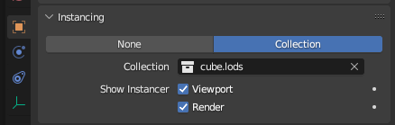
{kind=link}
{kind=link}
The first method is effectively a more flexible version of the third. Why is it more flexible? This will be explained below.
Editing Nodes
To convert a standard node into a random node, simply click the “+” button in the Entities panel.
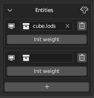The second entity will initially be empty, and you can assign a collection to it either through the dropdown menu, by entering the collection name manually, or by dragging it from the Outliner into the field.
Important
There is no safeguard against incorrect selections, so all collections are available for selection. Ensure that the chosen collection is indeed a node.
To set a weight different from the default value of 1.0, click Init weight
and enter the desired value in the newly generated field.
By default, all entities are displayed immediately, which may hinder your workflow. To hide one or more entities in a random node, click the Monitor icon next to its name.
To delete an entity, click the Trash icon. Once only one entity remains, the node will revert to a non-random state.
Setting Node Types and Changing Display
In composites, it’s possible (and sometimes necessary) to specify the node type – whether the asset is a rendinst, game object, composite, or prefab. The importer determines the type automatically, but when creating new nodes, you’ll need to specify it manually.
In Blender’s editor, an asset is represented by a collection that is drawn over an Empty object. Therefore, the type needs to be set in the collection’s properties. When the Composite Editor is enabled, a new panel, Type, is added to the Collection Properties.
To specify the type, click the circle next to the appropriate type – your selection will be highlighted. A newly created collection will show Undefined as the active value until a type is set.
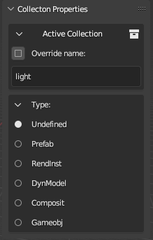During export, the collection’s name (without any suffix like .lodNN, .lods,
or .002) and its type, if specified, will be recorded. Nodes with instanced
collections such as:
assetasset.lodsasset.lod01asset.001
are treated equivalently by the exporter (assuming their types are the same). The “suffix trimming” allows you to toggle the display of all rendinst LODs at once (by default), switch to only the base LOD for cleaner and more accurate display, or focus on the LOD with collision to check for intersections between the parent and child colliders for proper destruction setup.
To hide a mesh from the composite preview, you can disable its original in the source collection for the viewport using the monitor icon, as you did with entities in the previous section. This is useful for disabling collision meshes, for example, when you want to view LODs with collisions but not the colliders themselves, or temporarily disabling decals if Z-fighting is visually distracting.
Any collection can be used:
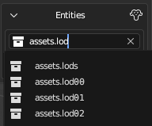Node Hierarchy in a Composite
To establish a parent-child relationship among nodes and build a more complex hierarchy, use Blender’s standard tools.
You can set a parent for a node through the object’s properties. However, this will cause the matrix to recalculate, resulting in the object visually “jumping” as its new “zero” point changes.
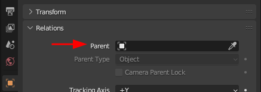To maintain the node’s visual position, use the Set Parent command – either
by pressing Ctrl+P or through the Object▸Parent menu.
To reverse this process and remove the parent while preserving the matrix, use
the Alt+P shortcut or select the option in the same Object▸Parent
menu.
Using Blender’s Built-in Features
To display nodes as Empty objects, the Composite Editor uses Blender’s built-in feature: collection instancing. As a result, tools that work with collection instancing also work with composites.
Replacing Node Content Quickly
If you need to quickly replace the content of multiple nodes with the same asset:
Select all the nodes you want to replace.
Assign the desired collection to the active node (the order of this step and the first one can be swapped – both work the same).
Then, link the same collection to all the selected Empty objects. You can do this by pressing
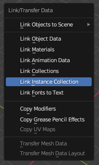Ctrl+Land selecting Link Instance Collection (the default hotkey), or by accessing the same option through the Object▸Link/Transfer Data menu if your hotkeys have been customized.
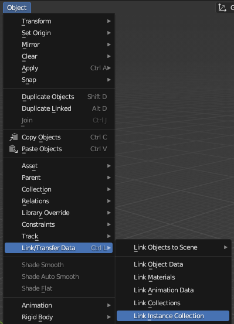
Snap to Surface
Remember that snapping also works here. For placing objects on an uneven surface, you might find the Face snapping mode with Project Individual Elements active to be useful. This ensures that all selected nodes will snap their pivot points to the surface. Optionally, you can also enable rotation to match the surface normal.
Important
Do not confuse this with the place_type:i setting for exported nodes – this
specific snapping needs to be set in the dagObject Properties of the Empty
object if required.
CMP Tools
BBOX to Node
The BBOX to Node tool converts the bounding boxes of all selected objects into instances of a chosen collection. This tool is designed to simplify the placement of objects like indoor walls, environment probes, wall holes, etc. You’ll need to create the necessary collections yourself.
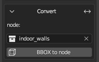Once the collection is set up, you can hide it and leave it untouched – just add a few meshes for future game objects and transform them as needed, whether in Object or Edit mode. The pivot position is irrelevant; the replacement will work as intended. Just be sure to monitor the bounding box before the transformation (you can enable its display in the Object Properties).
Here’s an extreme example (such rotations are rarely needed in practice):
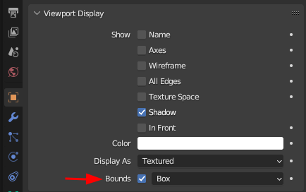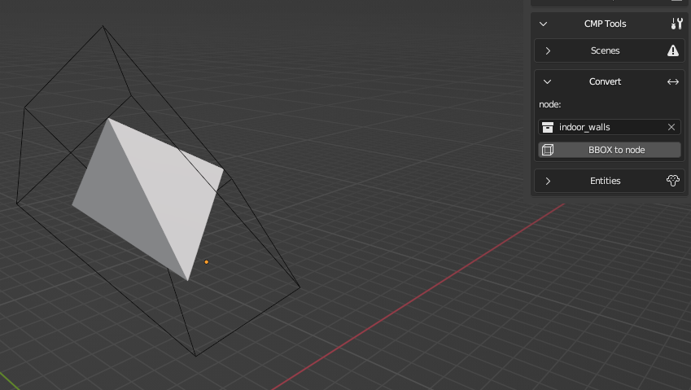
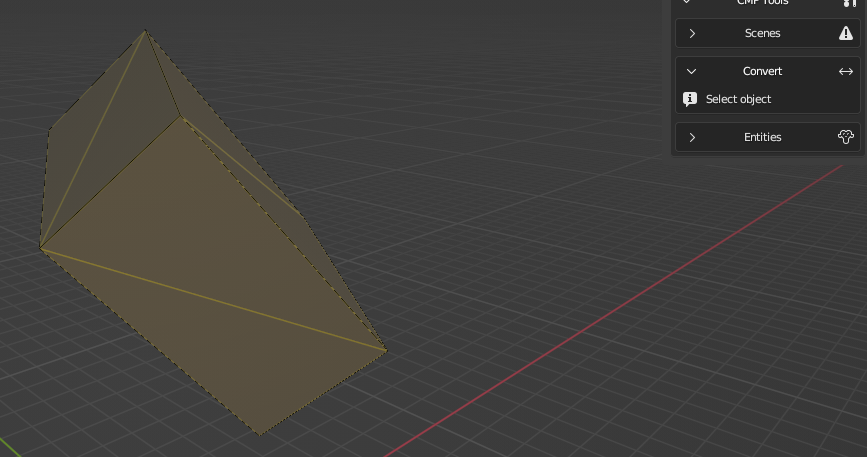
For clarity, it’s recommended adding a 1-meter cube with gi_black to the
future game object’s collection. This will make it easier to temporarily convert
it back to a mesh for further adjustments.
To Mesh
The To Mesh tool converts selected composite nodes (collection instances) into actual geometry.
Once converted, the geometry can be exported to any other format – now it’s just
a mesh. For example, you can transfer the composite to Houdini via
Alembic/FBX, where a .dag export already exists but importing isn’t
supported yet.
Explode
Want to edit a subcomposite directly in place, such as moving a plate on a table or adding another one? No problem! The Explode tool temporarily disassembles the selected composite instance and places its components as child objects of the original node, which now becomes “empty”. You can then make changes – adjust transforms, add or remove objects, etc.
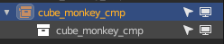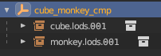
Changes can either be reverted to the original state by clicking Revert or applied using Rebuild, which will replace the original collection. Don’t forget to save these changes by exporting the modified subcomposite.
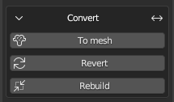However, reassembly is not mandatory – the disassembled composite can be exported without issues as an empty node with several children. If desired, you can separate them using Clear Parent and keep transformation and delete the “empty” node altogether. This is useful when you need to replace a multi-level random composite with one of its states – disassemble it (you can disassemble several nested levels at once) and remove the unnecessary parts.
The Explode tool also allows you to disassemble rendinsts and prefabs to make changes to their geometry, which can be useful at times. If the source was a directory containing all LODs, a disassembled rendinst will appear slightly different:
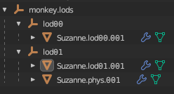Each LOD will be tied to its own “empty” node.
To reassemble it, you’ll need to select the top-level empty, not the one with the LOD number. Unlike a disassembled composite, disassembling a mesh will cause an export error, so be sure to either revert the node to its original state or apply the changes before exporting.
Important
A known limitation is that this type of editing leaves “garbage” indices, as it works through creating copies, and Blender doesn’t allow two objects of the same type to have identical names. Additionally, Explode currently cannot retain the parent-child relationships within the disassembled collection, but it does preserve the correct coordinates relative to the composite’s “zero” point. If the hierarchy is important, you’ll need to manually restore it after using Rebuild.
CMP Export
The CMP Export section is straightforward: specify the directory path where the composite should be exported, along with the collection representing the composite to be exported.
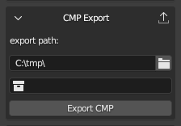Parameters
Export parameters, such as random offsets, are specified in the Object Properties of the Empty object. These parameters do not appear in the viewport. During import, only the initial state (the first part of the value) is applied, but any random deviation (the value after the comma) will not be.
If a node has at least one random field specified, its transformation matrix will not be saved. If the imported node has both a matrix and random fields, the random parameters will be ignored, and a corresponding notification will be logged.
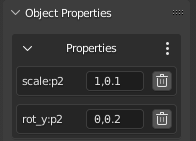Limitations of the Composite Editor
Includes Not Supported: Currently, includes are not supported. Lines with the
includedirective are ignored during import, which may lead to some data loss. This will be noted in the log.Blender’s Limitation: Blender supports a maximum of 7 levels of nesting. Multi-level composites may experience performance issues and may not display correctly – starting from the 8th level of nesting, the content will not be rendered. However, import and export are still possible.
For example, a node-rendinst represents one level of nesting. A random node with several rendinsts represents two levels. A subcomposite with these random nodes would be three levels, and so on. This issue mainly arises when importing buildings with interiors, such as in daNetGame-based games, where
indoor_stuffincludes numerous nested composites with randomness – like random cabinets with objects placed on the shelves, each with random offsets.Axis Mismatch: In Blender, the Z-axis is up, while in Dagor, the Y-axis is up. While matrix adjustments are handled automatically, preventing scenes from tilting, it’s important to remember that
offset_y:p2refers to up/down movement despite the name. The same logic applies to rotation and scaling.Random Offset Parameters: Currently, random offset parameters do not automatically display in the viewport. During import, the add-on sets the initial offset, but if you add or modify a random parameter, you’ll need to manually adjust the node’s position.